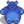

Bear
Jump to navigation
Jump to search
Bear may refer to:
- Trash Bear
- The bear who writes Secret Note #23
- The bear who appears in Emily's Ten-Heart event
 Futan Bear
Futan Bear
Lg. Futan Bear Bear Statue
Bear Statue